Icon definitions
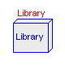
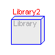
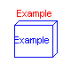
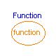
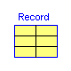
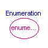
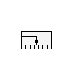
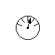
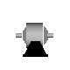
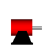
Information
This package contains definitions for the graphical layout of
components which may be used in different libraries.
The icons can be utilized by inheriting them in the desired class
using "extends".
- Main Author:
- Martin Otter
Deutsches Zentrum fuer Luft und Raumfahrt e.V. (DLR)
Oberpfaffenhofen
Postfach 1116
D-82230 Wessling
email: Martin.Otter@dlr.de
Release Notes:
- October 21, 2002
by Martin Otter
and Christian Schweiger:
Added new icons Function, Enumerations and Record.
- June 6, 2000
by Martin Otter:
Replaced model keyword by package if the main
usage is for inheriting from a package.
New icons GearIcon and MotorIcon.
- Sept. 18, 1999
by Martin Otter:
Renaming package Icon to Icons.
Model Advanced removed (icon not accepted on the Modelica meeting).
New model Library2, which is the Library icon with enough place
to add library specific elements in the icon. Icon also used in diagram
level for models Info, TranslationalSensor, RotationalSensor.
- July 15, 1999
by Martin Otter:
Model Caution renamed to Advanced, model Sensor renamed to
TranslationalSensor, new model RotationalSensor.
- June 30, 1999
by Martin Otter:
Realized a first version.
Copyright © 1999-2002, Modelica Association and DLR.
The Modelica package is free software; it can be redistributed and/or modified
under the terms of the Modelica license, see the license conditions
and the accompanying disclaimer in the documentation of package
Modelica in file "Modelica/package.mo".
Icon for an information class
Modelica definition
partial model Info "Icon for an information class"
end Info;
Icon for an example model
Modelica definition
partial model Example "Icon for an example model"
end Example;
Icon for a function
Modelica definition
partial function Function "Icon for a function"
end Function;
Icon for a record
Modelica definition
partial record Record "Icon for a record"
end Record;
Icon for an enumeration
Modelica definition
partial function Enumeration "Icon for an enumeration"
end Enumeration;
Icon representing translational measurement device

Modelica definition
partial model TranslationalSensor
"Icon representing translational measurement device"
end TranslationalSensor;
Icon representing rotational measurement device
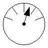
Modelica definition
partial model RotationalSensor
"Icon representing rotational measurement device"
end RotationalSensor;
Icon for gearbox
Modelica definition
partial model GearIcon "Icon for gearbox"
end GearIcon;
Icon for electrical motor
Modelica definition
partial model MotorIcon "Icon for electrical motor"
end MotorIcon;
HTML-documentation generated by Dymola Wed Dec 11 11:13:06 2002
.